CODING AGENTS AS PIXEL WORLD MODELS
traex/DeepSeek-V4.1-Flash · 0113
点击播放 · 原生 RGB 像素
逐轮保存的候选
回放视频、检查图与代码变化。
每份候选均可单独播放。实际图片检查记录在下方工具轨迹中。
候选 01播放与检查图
点击播放 · 原生 RGB 像素
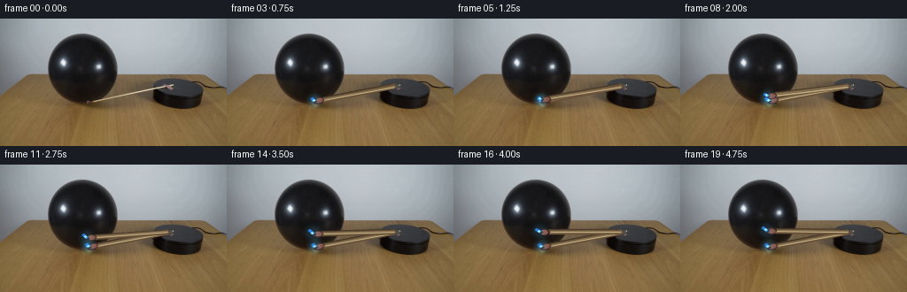
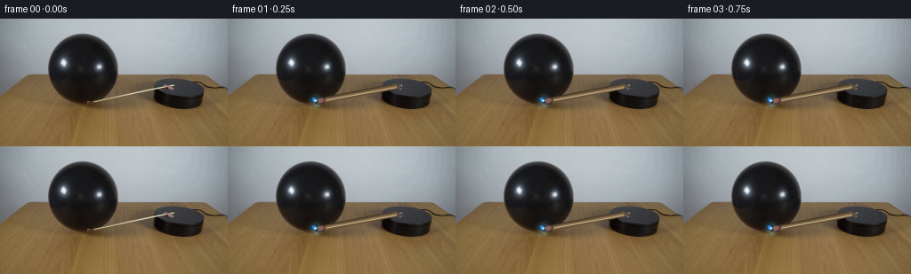
展开代码变化
--- 上一保存版本
+++ 本次保存版本
@@ -0,0 +1,223 @@
+from pathlib import Path
+
+import cv2
+import numpy as np
+from PIL import Image
+
+import artifact_io
+
+
+WIDTH = 256
+HEIGHT = 144
+FRAMES = 20
+FPS = 4
+
+PIVOT = np.array([191.0, 76.0])
+MATCH_LENGTH = 92.5
+START_ANGLE = np.deg2rad(169.0)
+TOTAL_SWEEP = np.deg2rad(12.0)
+
+
+def match_mask(shape):
+ mask = np.zeros(shape[:2], np.uint8)
+ tip = PIVOT + MATCH_LENGTH * np.array(
+ [np.cos(START_ANGLE), np.sin(START_ANGLE)]
+ )
+ cv2.line(
+ mask,
+ tuple(np.round(PIVOT).astype(int)),
+ tuple(np.round(tip).astype(int)),
+ 255,
+ 5,
+ cv2.LINE_AA,
+ )
+ cv2.ellipse(
+ mask,
+ tuple(np.round(tip).astype(int)),
+ (5, 4),
+ np.rad2deg(START_ANGLE) + 90.0,
+ 0,
+ 360,
+ 255,
+ -1,
+ cv2.LINE_AA,
+ )
+ return mask
+
+
+def clean_plate(image):
+ mask = match_mask(image.shape)
+ return cv2.inpaint(image, mask, 3, cv2.INPAINT_TELEA)
+
+
+def dent_balloon(image, tip, amount):
+ """Compress the glossy balloon locally where the match presses into it."""
+ if amount <= 0.0:
+ return image
+
+ h, w = image.shape[:2]
+ yy, xx = np.mgrid[0:h, 0:w]
+ dx = xx - tip[0]
+ dy = yy - tip[1]
+ radius = 11.5
+ weight = np.exp(-(dx * dx + dy * dy) / (2.0 * radius * radius))
+ weight *= ((xx > 55.0) & (xx < 134.0) & (yy > 25.0) & (yy < 104.0))
+
+ # A short, soft compression inward from the contact point.
+ map_x = xx - amount * weight
+ map_y = yy + 0.18 * amount * weight * np.tanh(dy / 5.0)
+ warped = cv2.remap(
+ image,
+ map_x.astype(np.float32),
+ map_y.astype(np.float32),
+ cv2.INTER_CUBIC,
+ borderMode=cv2.BORDER_REFLECT_101,
+ )
+ alpha = np.clip(weight * 1.15, 0.0, 1.0)[..., None]
+ return (warped * alpha + image * (1.0 - alpha)).astype(np.uint8)
+
+
+def draw_shaft(image, angle):
+ """Draw a thin wooden match with a dark rim and a warm highlight."""
+ unit = np.array([np.cos(angle), np.sin(angle)])
+ normal = np.array([-unit[1], unit[0]])
+ head_center = PIVOT + (MATCH_LENGTH - 4.0) * unit
+ shaft_end = PIVOT + (MATCH_LENGTH - 8.0) * unit
+ start = PIVOT + 2.0 * unit
+
+ def point(p, offset=0.0):
+ return tuple(np.round(p + normal * offset).astype(int))
+
+ # Contact shadow and dark edge keep the match grounded on the wood.
+ shadow = PIVOT + (MATCH_LENGTH * 0.48) * unit + normal * 2.0
+ cv2.line(
+ image,
+ point(PIVOT + 6.0 * unit, 1.9),
+ point(PIVOT + (MATCH_LENGTH - 8.0) * unit, 1.9),
+ (66, 53, 37),
+ 2,
+ cv2.LINE_AA,
+ )
+ cv2.line(image, point(start), point(shaft_end), (103, 80, 55), 3, cv2.LINE_AA)
+ cv2.line(
+ image,
+ point(start, -0.3),
+ point(shaft_end, -0.3),
+ (207, 188, 143),
+ 1,
+ cv2.LINE_AA,
+ )
+ cv2.line(
+ image,
+ point(start, 0.8),
+ point(shaft_end, 0.8),
+ (139, 119, 86),
+ 1,
+ cv2.LINE_AA,
+ )
+
+ # Red-brown match head, with a tiny charred cap at the striking end.
+ axis = np.rad2deg(angle)
+ cv2.ellipse(
+ image,
+ tuple(np.round(head_center).astype(int)),
+ (5, 3),
+ axis,
+ 0,
+ 360,
+ (57, 31, 25),
+ -1,
+ cv2.LINE_AA,
+ )
+ cv2.ellipse(
+ image,
+ tuple(np.round(head_center - normal * 0.2).astype(int)),
+ (4, 2),
+ axis,
+ 0,
+ 360,
+ (127, 79, 66),
+ -1,
+ cv2.LINE_AA,
+ )
+ cap = head_center + 4.7 * unit
+ cv2.circle(image, tuple(np.round(cap).astype(int)), 2, (47, 31, 24), -1, cv2.LINE_AA)
+ return head_center, cap
+
+
+def draw_flame(image, cap, frame_index, contact):
+ if frame_index < 2:
+ return
+
+ # The flame is small because the head is already against the balloon.
+ flicker = 0.55 + 0.45 * np.sin(frame_index * 2.25)
+ length = 3.2 + 1.8 * flicker + 2.0 * contact
+ direction = np.array([-0.80, -0.60])
+ base = cap + direction * 1.2
+ tip = cap + direction * length
+
+ glow = np.zeros_like(image)
+ cv2.circle(
+ glow,
+ tuple(np.round(base).astype(int)),
+ max(4, int(round(length + 2.0))),
+ (30, 82, 108),
+ -1,
+ cv2.LINE_AA,
+ )
+ glow = cv2.GaussianBlur(glow, (0, 0), 2.4)
+ cv2.addWeighted(glow, 0.35, image, 1.0, 0, dst=image)
+
+ cv2.line(
+ image,
+ tuple(np.round(base).astype(int)),
+ tuple(np.round(tip).astype(int)),
+ (42, 126, 225),
+ 2,
+ cv2.LINE_AA,
+ )
+ cv2.circle(
+ image,
+ tuple(np.round(base + direction * 0.8).astype(int)),
+ 1,
+ (155, 238, 255),
+ -1,
+ cv2.LINE_AA,
+ )
+
+
+def ease_in_out(t):
+ return t * t * (3.0 - 2.0 * t)
+
+
+def generate_frames():
+ case_dir = Path(__file__).resolve().parent
+ original = np.asarray(Image.open(case_dir / "first_frame.png").convert("RGB"))
+ base = clean_plate(original)
+ frames = []
+
+ for index in range(FRAMES):
+ if index == 0:
+ frames.append(original.copy())
+ continue
+
+ t = (index - 1) / (FRAMES - 2)
+ eased = ease_in_out(t)
+ angle = START_ANGLE + TOTAL_SWEEP * eased
+ unit = np.array([np.cos(angle), np.sin(angle)])
+ tip = PIVOT + (MATCH_LENGTH - 3.0) * unit
+
+ contact = 0.0
+ if index >= 4:
+ contact = float(np.clip((index - 3) / 10.0, 0.0, 1.0))
+ frame = dent_balloon(base, tip, 2.8 * contact)
+ head_center, cap = draw_shaft(frame, angle)
+ draw_flame(frame, cap, index, contact)
+ frames.append(frame)
+
+ return np.stack(frames)
+
+
+if __name__ == "__main__":
+ case_dir = Path(__file__).resolve().parent
+ artifact_io.save(generate_frames(), case_dir)
候选 02播放与检查图
点击播放 · 原生 RGB 像素
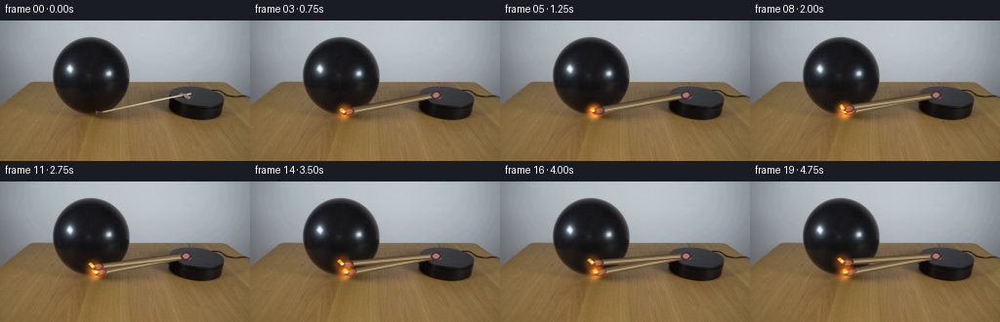
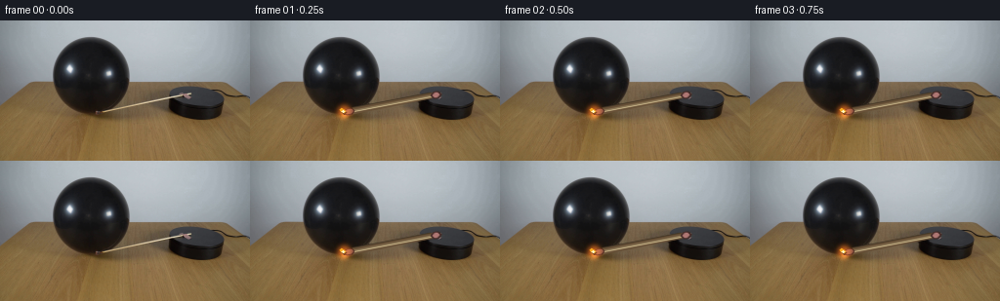
展开代码变化
--- 上一保存版本
+++ 本次保存版本
@@ -13,9 +13,9 @@
FPS = 4
PIVOT = np.array([191.0, 76.0])
-MATCH_LENGTH = 92.5
+MATCH_LENGTH = 95.5
START_ANGLE = np.deg2rad(169.0)
-TOTAL_SWEEP = np.deg2rad(12.0)
+TOTAL_SWEEP = np.deg2rad(7.0)
def match_mask(shape):
@@ -142,6 +142,30 @@
)
cap = head_center + 4.7 * unit
cv2.circle(image, tuple(np.round(cap).astype(int)), 2, (47, 31, 24), -1, cv2.LINE_AA)
+
+ # Small red attachment visible where the match meets the platform.
+ cv2.ellipse(
+ image,
+ tuple(np.round(PIVOT + 1.5 * unit).astype(int)),
+ (5, 3),
+ axis,
+ 0,
+ 360,
+ (66, 42, 39),
+ -1,
+ cv2.LINE_AA,
+ )
+ cv2.ellipse(
+ image,
+ tuple(np.round(PIVOT + 1.2 * unit).astype(int)),
+ (3, 2),
+ axis,
+ 0,
+ 360,
+ (174, 119, 115),
+ -1,
+ cv2.LINE_AA,
+ )
return head_center, cap
@@ -152,7 +176,7 @@
# The flame is small because the head is already against the balloon.
flicker = 0.55 + 0.45 * np.sin(frame_index * 2.25)
length = 3.2 + 1.8 * flicker + 2.0 * contact
- direction = np.array([-0.80, -0.60])
+ direction = np.array([-0.72, -0.69])
base = cap + direction * 1.2
tip = cap + direction * length
@@ -161,7 +185,7 @@
glow,
tuple(np.round(base).astype(int)),
max(4, int(round(length + 2.0))),
- (30, 82, 108),
+ (244, 112, 25),
-1,
cv2.LINE_AA,
)
@@ -172,7 +196,7 @@
image,
tuple(np.round(base).astype(int)),
tuple(np.round(tip).astype(int)),
- (42, 126, 225),
+ (247, 170, 31),
2,
cv2.LINE_AA,
)
@@ -180,7 +204,7 @@
image,
tuple(np.round(base + direction * 0.8).astype(int)),
1,
- (155, 238, 255),
+ (255, 247, 195),
-1,
cv2.LINE_AA,
)
@@ -210,7 +234,7 @@
contact = 0.0
if index >= 4:
contact = float(np.clip((index - 3) / 10.0, 0.0, 1.0))
- frame = dent_balloon(base, tip, 2.8 * contact)
+ frame = dent_balloon(base, tip, 4.0 * contact)
head_center, cap = draw_shaft(frame, angle)
draw_flame(frame, cap, index, contact)
frames.append(frame)
候选 03播放与检查图
点击播放 · 原生 RGB 像素
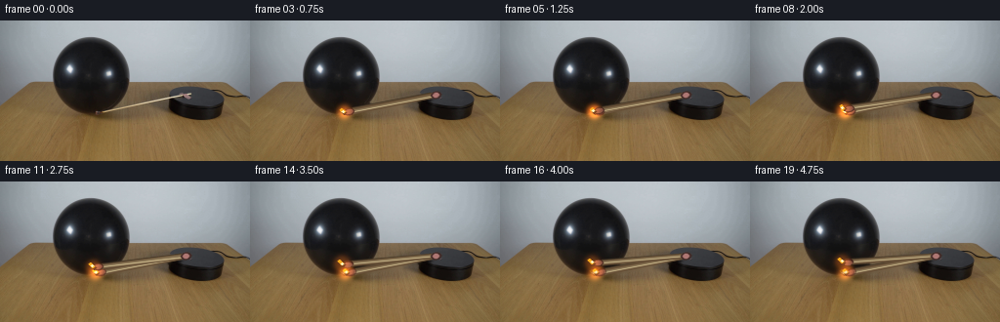
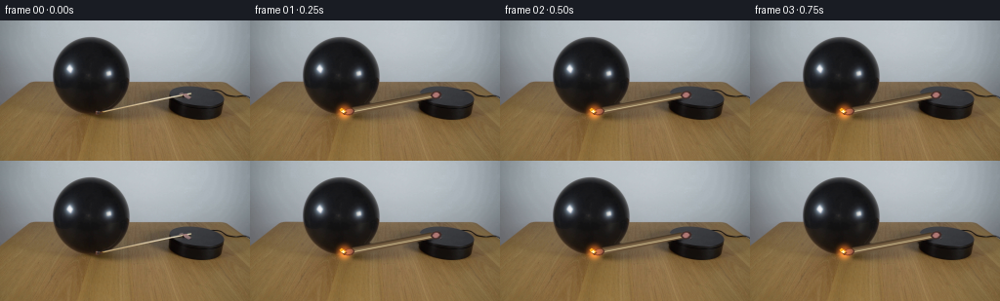
展开代码变化
--- 上一保存版本
+++ 本次保存版本
@@ -28,13 +28,13 @@
tuple(np.round(PIVOT).astype(int)),
tuple(np.round(tip).astype(int)),
255,
- 5,
+ 7,
cv2.LINE_AA,
)
cv2.ellipse(
mask,
tuple(np.round(tip).astype(int)),
- (5, 4),
+ (10, 8),
np.rad2deg(START_ANGLE) + 90.0,
0,
360,
@@ -47,7 +47,7 @@
def clean_plate(image):
mask = match_mask(image.shape)
- return cv2.inpaint(image, mask, 3, cv2.INPAINT_TELEA)
+ return cv2.inpaint(image, mask, 4, cv2.INPAINT_TELEA)
def dent_balloon(image, tip, amount):
候选 04播放与检查图
点击播放 · 原生 RGB 像素
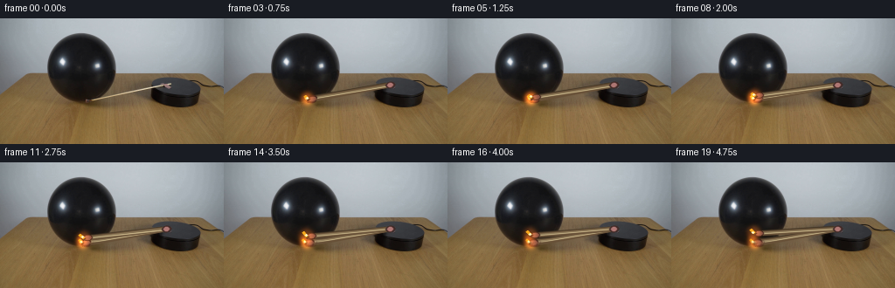
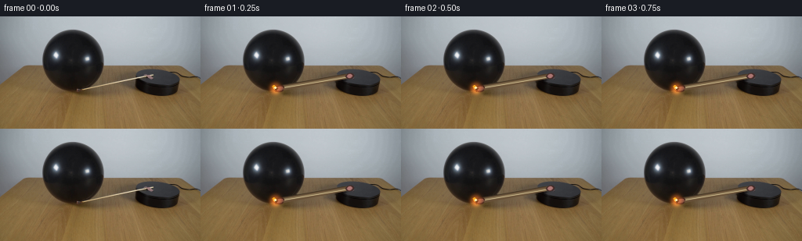
展开代码变化
--- 上一保存版本
+++ 本次保存版本
@@ -15,7 +15,7 @@
PIVOT = np.array([191.0, 76.0])
MATCH_LENGTH = 95.5
START_ANGLE = np.deg2rad(169.0)
-TOTAL_SWEEP = np.deg2rad(7.0)
+TOTAL_SWEEP = np.deg2rad(8.0)
def match_mask(shape):
@@ -64,7 +64,7 @@
weight *= ((xx > 55.0) & (xx < 134.0) & (yy > 25.0) & (yy < 104.0))
# A short, soft compression inward from the contact point.
- map_x = xx - amount * weight
+ map_x = xx + amount * weight
map_y = yy + 0.18 * amount * weight * np.tanh(dy / 5.0)
warped = cv2.remap(
image,
@@ -225,9 +225,8 @@
frames.append(original.copy())
continue
- t = (index - 1) / (FRAMES - 2)
- eased = ease_in_out(t)
- angle = START_ANGLE + TOTAL_SWEEP * eased
+ t = index / (FRAMES - 1)
+ angle = START_ANGLE + TOTAL_SWEEP * t
unit = np.array([np.cos(angle), np.sin(angle)])
tip = PIVOT + (MATCH_LENGTH - 3.0) * unit
候选 05播放与检查图
点击播放 · 原生 RGB 像素
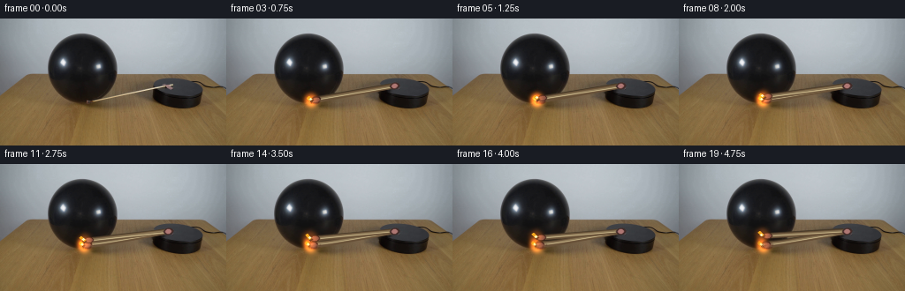
展开代码变化
--- 上一保存版本
+++ 本次保存版本
@@ -170,7 +170,7 @@
def draw_flame(image, cap, frame_index, contact):
- if frame_index < 2:
+ if frame_index < 1:
return
# The flame is small because the head is already against the balloon.
候选 06播放与检查图
点击播放 · 原生 RGB 像素

展开代码变化
--- 上一保存版本
+++ 本次保存版本
@@ -77,7 +77,7 @@
return (warped * alpha + image * (1.0 - alpha)).astype(np.uint8)
-def draw_shaft(image, angle):
+def draw_shaft(image, angle, frame_index):
"""Draw a thin wooden match with a dark rim and a warm highlight."""
unit = np.array([np.cos(angle), np.sin(angle)])
normal = np.array([-unit[1], unit[0]])
@@ -86,7 +86,8 @@
start = PIVOT + 2.0 * unit
def point(p, offset=0.0):
- return tuple(np.round(p + normal * offset).astype(int))
+ q = p + normal * offset
+ return int(round(float(q[0]) * 16.0)), int(round(float(q[1]) * 16.0))
# Contact shadow and dark edge keep the match grounded on the wood.
shadow = PIVOT + (MATCH_LENGTH * 0.48) * unit + normal * 2.0
@@ -97,8 +98,17 @@
(66, 53, 37),
2,
cv2.LINE_AA,
- )
- cv2.line(image, point(start), point(shaft_end), (103, 80, 55), 3, cv2.LINE_AA)
+ shift=4,
+ )
+ cv2.line(
+ image,
+ point(start),
+ point(shaft_end),
+ (103, 80, 55),
+ 3,
+ cv2.LINE_AA,
+ shift=4,
+ )
cv2.line(
image,
point(start, -0.3),
@@ -106,6 +116,7 @@
(207, 188, 143),
1,
cv2.LINE_AA,
+ shift=4,
)
cv2.line(
image,
@@ -114,13 +125,14 @@
(139, 119, 86),
1,
cv2.LINE_AA,
+ shift=4,
)
# Red-brown match head, with a tiny charred cap at the striking end.
axis = np.rad2deg(angle)
cv2.ellipse(
image,
- tuple(np.round(head_center).astype(int)),
+ (int(round(head_center[0] * 16)), int(round(head_center[1] * 16))),
(5, 3),
axis,
0,
@@ -128,10 +140,14 @@
(57, 31, 25),
-1,
cv2.LINE_AA,
- )
- cv2.ellipse(
- image,
- tuple(np.round(head_center - normal * 0.2).astype(int)),
+ shift=4,
+ )
+ cv2.ellipse(
+ image,
+ (
+ int(round((head_center[0] - normal[0] * 0.2) * 16)),
+ int(round((head_center[1] - normal[1] * 0.2) * 16)),
+ ),
(4, 2),
axis,
0,
@@ -139,14 +155,26 @@
(127, 79, 66),
-1,
cv2.LINE_AA,
+ shift=4,
)
cap = head_center + 4.7 * unit
- cv2.circle(image, tuple(np.round(cap).astype(int)), 2, (47, 31, 24), -1, cv2.LINE_AA)
+ cv2.circle(
+ image,
+ (int(round(cap[0] * 16)), int(round(cap[1] * 16))),
+ 2,
+ (47, 31, 24),
+ -1,
+ cv2.LINE_AA,
+ shift=4,
+ )
# Small red attachment visible where the match meets the platform.
cv2.ellipse(
image,
- tuple(np.round(PIVOT + 1.5 * unit).astype(int)),
+ (
+ int(round((PIVOT[0] + 1.5 * unit[0]) * 16)),
+ int(round((PIVOT[1] + 1.5 * unit[1]) * 16)),
+ ),
(5, 3),
axis,
0,
@@ -154,10 +182,14 @@
(66, 42, 39),
-1,
cv2.LINE_AA,
- )
- cv2.ellipse(
- image,
- tuple(np.round(PIVOT + 1.2 * unit).astype(int)),
+ shift=4,
+ )
+ cv2.ellipse(
+ image,
+ (
+ int(round((PIVOT[0] + 1.2 * unit[0]) * 16)),
+ int(round((PIVOT[1] + 1.2 * unit[1]) * 16)),
+ ),
(3, 2),
axis,
0,
@@ -165,18 +197,22 @@
(174, 119, 115),
-1,
cv2.LINE_AA,
+ shift=4,
)
return head_center, cap
-def draw_flame(image, cap, frame_index, contact):
+def draw_flame(image, cap, frame_index, contact, angle):
if frame_index < 1:
return
# The flame is small because the head is already against the balloon.
flicker = 0.55 + 0.45 * np.sin(frame_index * 2.25)
length = 3.2 + 1.8 * flicker + 2.0 * contact
- direction = np.array([-0.72, -0.69])
+ sway = 0.10 * np.sin(frame_index * 2.25)
+ direction = np.array(
+ [-np.cos(angle + 0.78 + sway), -np.sin(angle + 0.78 + sway)]
+ )
base = cap + direction * 1.2
tip = cap + direction * length
@@ -194,24 +230,25 @@
cv2.line(
image,
- tuple(np.round(base).astype(int)),
- tuple(np.round(tip).astype(int)),
+ (int(round(base[0] * 16)), int(round(base[1] * 16))),
+ (int(round(tip[0] * 16)), int(round(tip[1] * 16))),
(247, 170, 31),
- 2,
- cv2.LINE_AA,
+ 3,
+ cv2.LINE_AA,
+ shift=4,
)
cv2.circle(
image,
- tuple(np.round(base + direction * 0.8).astype(int)),
+ (
+ int(round((base[0] + direction[0] * 0.8) * 16)),
+ int(round((base[1] + direction[1] * 0.8) * 16)),
+ ),
1,
(255, 247, 195),
- -1,
- cv2.LINE_AA,
- )
-
-
-def ease_in_out(t):
- return t * t * (3.0 - 2.0 * t)
+ 1,
+ cv2.LINE_AA,
+ shift=4,
+ )
def generate_frames():
@@ -234,8 +271,8 @@
if index >= 4:
contact = float(np.clip((index - 3) / 10.0, 0.0, 1.0))
frame = dent_balloon(base, tip, 4.0 * contact)
- head_center, cap = draw_shaft(frame, angle)
- draw_flame(frame, cap, index, contact)
+ head_center, cap = draw_shaft(frame, angle, index)
+ draw_flame(frame, cap, index, contact, angle)
frames.append(frame)
return np.stack(frames)
候选 07播放与检查图
候选 08播放与检查图
点击播放 · 原生 RGB 像素

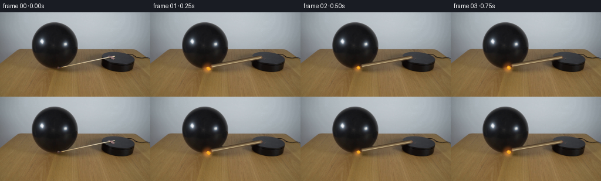
展开代码变化
--- 上一保存版本
+++ 本次保存版本
@@ -53,7 +53,7 @@
def dent_balloon(image, tip, amount):
"""Compress the glossy balloon locally where the match presses into it."""
if amount <= 0.0:
- return image
+ return image.copy()
h, w = image.shape[:2]
yy, xx = np.mgrid[0:h, 0:w]
可观测工具轨迹
实际执行的命令与返回图片。
命令 1exit 0
/bin/bash -c "pwd && rg --files -g '"'!*.png'"' -g '"'!*.jpg'"' -g '"'!*.mp4'"' | sed -n '1,160p'"
命令 2exit 0
/bin/bash -c "printf '%s\\n' '--- prompt.txt ---'; sed -n '1,240p' prompt.txt; printf '%s\\n' '--- GENERATION_RULES.md ---'; sed -n '1,320p' GENERATION_RULES.md"
命令 3exit 1
/bin/bash -c "find . -maxdepth 2 -type f -printf '%p\\n' | sort | sed -n '1,200p'; printf '%s\\n' '--- tools ---'; command -v ffmpeg; command -v python; command -v node; command -v convert; command -v magick; command -v blender"
命令 4exit 0
/bin/bash -c "sed -n '1,260p' artifact_io.py; sed -n '1,220p' player_template.html"
命令 5exit 0
/bin/bash -c "python - <<'PY'
mods=['numpy','PIL','cv2','scipy','skimage','imageio','matplotlib']
for m in mods:
try:
x=__import__(m)
print(m,'OK',getattr(x,'__version__',''))
except Exception as e: print(m,'NO',type(e).__name__)
from PIL import Image
im=Image.open('first_frame.png')
print('image',im.size,im.mode)
PY"命令 6exit 0
/bin/bash -c "python - <<'PY'
from PIL import Image,ImageDraw
im=Image.open('first_frame.png')
im.resize((1024,576),Image.Resampling.NEAREST).save('.tmp/zoom.png')
# crop full scene around relevant objects
im.crop((35,25,245,130)).resize((1260,630),Image.Resampling.LANCZOS).save('.tmp/crop.png')
PY"命令 7exit 0
/bin/bash -c "python - <<'PY'
from PIL import Image,ImageDraw,ImageFont
im=Image.open('first_frame.png').crop((50,45,230,115)).resize((1440,560),Image.Resampling.NEAREST)
d=ImageDraw.Draw(im)
# original coords, 8 px per original px
for x in range(56,231,8):
xx=(x-50)*8
d.line((xx,0,xx,560),fill=(255,255,0),width=1)
d.text((xx+2,2),str(x),fill=(255,255,0))
for y in range(48,116,8):
yy=(y-45)*8
d.line((0,yy,1440,yy),fill=(0,255,255),width=1)
d.text((2,yy+1),str(y),fill=(0,255,255))
im.save('.tmp/grid.png')
PY"命令 8exit 0
/bin/bash -c "python - <<'PY'
from PIL import Image
import numpy as np
im=np.array(Image.open('first_frame.png'))
for y in range(84,98):
s=''
for x in range(95,192):
r,g,b=im[y,x]
if r<25 and g<25 and b<25: c='#'
elif r<55 and g<50 and b<45: c='D'
elif r>175 and g>145 and b>110: c='W'
elif r>130 and g>100 and b>70: c='.'
elif r>g*1.3 and g>b*1.2: c='R'
else: c=' '
s+=c
print(f'{y:3} {s}')
PY"命令 9exit 0
/bin/bash -c "python - <<'PY'
from PIL import Image
import numpy as np
im=np.array(Image.open('first_frame.png'))
# print cross-sections around points along match
p=np.array([188.,76.]); q=np.array([100.,94.])
d=(q-p)/np.linalg.norm(q-p); n=np.array([-d[1],d[0]])
for t in [0,.1,.3,.5,.7,.85,.93,.97,1]:
c=p+(q-p)*t
print('\\nt',t,'at',np.round(c,1))
for s in range(-5,6):
x,y=np.round(c+n*s).astype(int); print(s,tuple(im[y,x]),end='; ')
print()
PY"命令 10exit 0
/bin/bash -c "python - <<'PY'
import cv2, numpy as np
im=cv2.imread('first_frame.png')
g=cv2.cvtColor(im,cv2.COLOR_BGR2GRAY)
e=cv2.Canny(g,40,120)
lines=cv2.HoughLinesP(e,1,np.pi/180,threshold=15,minLineLength=30,maxLineGap=5)
for l in lines[:40]:
x1,y1,x2,y2=l[0]; print((x1,y1,x2,y2),round(np.degrees(np.arctan2(y2-y1,x2-x1)),1),round(np.hypot(x2-x1,y2-y1),1))
PY"命令 11exit 0
/bin/bash -c "MPLCONFIGDIR=.tmp/mpl python generate.py && python - <<'PY'
from PIL import Image
import numpy as np
im0=np.asarray(Image.open('first_frame.png'))
imf=np.asarray(Image.open('frames/00.png'))
print('frame0 identical:',np.array_equal(im0,imf),'max diff',np.abs(im0.astype(int)-imf).max())
print('frames',len(list(__import__('pathlib').Path('frames').glob('*.png'))))
PY"命令 12exit 0
/bin/bash -c "python - <<'PY'
from PIL import Image,ImageDraw
ims=[]
for i in [0,3,7,11,15,19]:
im=Image.open(f'frames/{i:02d}.png').crop((45,35,225,115)).resize((720,320),Image.Resampling.NEAREST)
ims.append((i,im))
out=Image.new('RGB',(1440,1080),(20,20,20)); d=ImageDraw.Draw(out)
for k,(i,im) in enumerate(ims):
x=(k%2)*720;y=(k//2)*360
d.text((x+4,y+4),f'frame {i:02d}',fill='white');out.paste(im,(x,y+28))
out.save('.tmp/contact_frames.png')
PY"命令 13exit 0
/bin/bash -c "python - <<'PY'
from PIL import Image
import numpy as np
im=np.asarray(Image.open('first_frame.png'))
# coordinates and RGB samples at shaft pixels
for x in range(100,193,10):
# expected y=94-(x-100)*.199
y=round(94-(x-100)*.199)
print(x,y,tuple(im[y,x]))
# Get approximate platform ellipse edges by dark segmentation in ROI
for y in range(65,105,2):
xs=np.flatnonzero(np.max(im[y,170:250],axis=1)<45)+170
if xs.size: print(y,xs.min(),xs.max())
PY"命令 14exit 0
/bin/bash -c "python - <<'PY'
from PIL import Image,ImageDraw
im=Image.open('frames/10.png').crop((80,35,150,105)).resize((700,700),Image.Resampling.NEAREST)
d=ImageDraw.Draw(im)
for x in range(80,151,5):
xx=(x-80)*10;d.line((xx,0,xx,700),fill=(255,255,0),width=1);d.text((xx+1,2),str(x),fill='yellow')
for y in range(35,106,5):
yy=(y-35)*10;d.line((0,yy,700,yy),fill=(0,255,255),width=1);d.text((1,yy+1),str(y),fill='cyan')
im.save('.tmp/contact_grid.png')
PY"命令 15exit 0
/bin/bash -c "python - <<'PY'
import numpy as np
from PIL import Image
from generate import clean_plate, match_mask
im=np.asarray(Image.open('first_frame.png').convert('RGB'))
base=clean_plate(im)
Image.fromarray(base).save('.tmp/clean.png')
Image.fromarray(match_mask(im.shape)).save('.tmp/mask.png')
# zoom base
Image.fromarray(base[35:110,75:205]).resize((1040,600),Image.Resampling.NEAREST).save('.tmp/clean_zoom.png')
PY"命令 16exit 0
/bin/bash -c "python - <<'PY'
import cv2, numpy as np
from PIL import Image
from generate import match_mask
im=np.asarray(Image.open('first_frame.png').convert('RGB'))
m=match_mask(im.shape)
for r in [2,3,4,6]:
for name,flag in [('telea',cv2.INPAINT_TELEA),('ns',cv2.INPAINT_NS)]:
out=cv2.inpaint(im,m,r,flag)
Image.fromarray(out[35:110,75:205]).resize((1040,600),Image.Resampling.NEAREST).save(f'.tmp/clean_{name}{r}.png')
PY"命令 17exit 0
/bin/bash -c "python - <<'PY'
from PIL import Image
import numpy as np
im=np.asarray(Image.open('first_frame.png'))
for y in range(82,104):
xs=np.flatnonzero(np.mean(im[y,45:140],axis=1)<35)+45
# ranges
rs=[]
if xs.size:
b=np.r_[0,np.flatnonzero(np.diff(xs)>1)+1,len(xs)]
rs=[(int(xs[s]),int(xs[e-1])) for s,e in zip(b[:-1],b[1:])]
print(y,rs)
PY"命令 18exit 0
/bin/bash -c "python - <<'PY'
from PIL import Image
import numpy as np
im=np.asarray(Image.open('first_frame.png'))
# match centerline based endpoints tip head ~(191,76), flame head? rod to (100,94)
for x in range(96,196,2):
y=round(94-(x-100)*(18/91))
# display vertical RGB range around predicted y
vals=[]
for yy in range(y-2,y+3): vals.append((yy,tuple(im[yy,x])))
print(x,y,vals)
PY"命令 19exit 0
/bin/bash -c "python - <<'PY'
import numpy as np
from PIL import Image
from generate import PIVOT, START_ANGLE, MATCH_LENGTH
im=np.asarray(Image.open('first_frame.png'))
u=np.array([np.cos(START_ANGLE),np.sin(START_ANGLE)])
n=np.array([-u[1],u[0]])
print('u',u,'normal',n)
for t in range(0,95,5):
p=PIVOT+t*u
print(t, np.round(p,2), tuple(im[round(p[1]),round(p[0])]))
PY"命令 20exit 0
/bin/bash -c "MPLCONFIGDIR=.tmp/mpl python generate.py && python - <<'PY'
from PIL import Image,ImageDraw
ims=[]
for i in [0,3,7,11,15,19]:
im=Image.open(f'frames/{i:02d}.png').crop((45,35,225,115)).resize((720,320),Image.Resampling.NEAREST)
ims.append((i,im))
out=Image.new('RGB',(1440,1080),(20,20,20)); d=ImageDraw.Draw(out)
for k,(i,im) in enumerate(ims):
x=(k%2)*720;y=(k//2)*360
d.text((x+4,y+4),f'frame {i:02d}',fill='white');out.paste(im,(x,y+28))
out.save('.tmp/contact_frames2.png')
PY"命令 21exit 0
/bin/bash -c "python - <<'PY'
import cv2,numpy as np
from PIL import Image
from generate import PIVOT,START_ANGLE,MATCH_LENGTH
im=np.asarray(Image.open('first_frame.png').convert('RGB'))
for width,tipx,tipy in [(5,5,4),(7,8,6),(9,10,8),(7,12,9)]:
mask=np.zeros(im.shape[:2],np.uint8)
tip=PIVOT+MATCH_LENGTH*np.array([np.cos(START_ANGLE),np.sin(START_ANGLE)])
cv2.line(mask,tuple(PIVOT.astype(int)),tuple(tip.astype(int)),255,width,cv2.LINE_AA)
cv2.ellipse(mask,tuple(tip.astype(int)),(tipx,tipy),169,0,360,255,-1,cv2.LINE_AA)
out=cv2.inpaint(im,mask,4,cv2.INPAINT_TELEA)
Image.fromarray(out[75:105,85:125]).resize((600,450),Image.Resampling.NEAREST).save(f'.tmp/base_{width}_{tipx}.png')
Image.fromarray(mask[75:105,85:125]).resize((600,450),Image.Resampling.NEAREST).save(f'.tmp/mask_{width}_{tipx}.png')
PY"命令 22exit 0
/bin/bash -c "python - <<'PY' from PIL import Image import numpy as np for f in ['frames/03.png','frames/07.png','frames/11.png','frames/19.png']: im=np.asarray(Image.open(f)) # bounding box of pixels with red-ish flame in ROI r=im[60:100,80:125].astype(int) m=(r[:,:,0]>90)&(r[:,:,0]>r[:,:,1]*1.5)&(r[:,:,1]<170) ys,xs=np.where(m) print(f, (xs.min()+80,ys.min()+60,xs.max()+80,ys.max()+60) if len(xs) else None) PY"
命令 23exit 0
/bin/bash -c "MPLCONFIGDIR=.tmp/mpl python generate.py && python - <<'PY'
from PIL import Image,ImageDraw
ims=[]
for i in [0,3,7,11,15,19]:
im=Image.open(f'frames/{i:02d}.png').crop((45,35,225,115)).resize((720,320),Image.Resampling.NEAREST)
ims.append((i,im))
out=Image.new('RGB',(1440,1080),(20,20,20)); d=ImageDraw.Draw(out)
for k,(i,im) in enumerate(ims):
x=(k%2)*720;y=(k//2)*360
d.text((x+4,y+4),f'frame {i:02d}',fill='white');out.paste(im,(x,y+28))
out.save('.tmp/contact_frames3.png')
PY"命令 24exit 0
/bin/bash -c "python - <<'PY' import numpy as np # circle-circle intersection p=np.array([191.,76.]); a=95.; c=np.array([92.,47.]); b=49. d=np.linalg.norm(c-p); e=(a*a-b*b+d*d)/(2*d); h=np.sqrt(a*a-e*e) base=p+e*(c-p)/d; n=np.array([-(c-p)[1],(c-p)[0]])/d print(d,base+h*n,base-h*n) PY"
命令 25exit 0
/bin/bash -c "python - <<'PY'
import numpy as np
from PIL import Image
from generate import PIVOT,START_ANGLE,MATCH_LENGTH,TOTAL_SWEEP
im=np.asarray(Image.open('first_frame.png'))
for i in [0,4,8,12,16,19]:
t=max(0,(i-1)/18);e=t*t*(3-2*t);a=START_ANGLE+TOTAL_SWEEP*e
tip=PIVOT+(MATCH_LENGTH-3)*np.array([np.cos(a),np.sin(a)])
print(i,np.round(tip,2))
PY"命令 26exit 0
/bin/bash -c "python - <<'PY'
from PIL import Image
import numpy as np
im=np.asarray(Image.open('first_frame.png'))
# Print 3x3 patch at tip coordinates
for y in range(80,99):
print(y,' '.join('%02x%02x%02x'%tuple(im[y,x]) for x in range(94,106)))
PY"命令 27exit 0
/bin/bash -c "python - <<'PY'
from PIL import Image,ImageDraw
im=Image.open('first_frame.png').crop((45,35,135,110)).resize((900,750),Image.Resampling.NEAREST)
d=ImageDraw.Draw(im)
for x in range(45,136,5):
xx=(x-45)*10;d.line((xx,0,xx,750),fill=(255,255,0),width=1);d.text((xx+1,2),str(x),fill='yellow')
for y in range(35,111,5):
yy=(y-35)*10;d.line((0,yy,900,yy),fill=(0,255,255),width=1);d.text((1,yy+1),str(y),fill='cyan')
im.save('.tmp/balloon_left_grid.png')
PY"命令 28exit 0
/bin/bash -c "python - <<'PY'
from PIL import Image
import numpy as np
im=np.asarray(Image.open('frames/19.png'))
for y in range(80,101):
xs=[]
for x in range(90,110):
r,g,b=im[y,x]
if r>70 and g<50 and b<40: xs.append(x)
print(y,(min(xs),max(xs)) if xs else None)
PY"命令 29exit 0
/bin/bash -c "python - <<'PY'
from PIL import Image
import numpy as np
im=np.asarray(Image.open('frames/19.png'))
for y in range(80,101):
print(y,' '.join('%02x%02x%02x'%tuple(im[y,x]) for x in range(92,108)))
PY"命令 30exit 0
/bin/bash -c "python - <<'PY'
import cv2,numpy as np
from PIL import Image
im=np.asarray(Image.open('first_frame.png'))
for k,thr in enumerate([22,28,35,42]):
g=cv2.cvtColor(im,cv2.COLOR_RGB2GRAY)
m=(g<thr).astype(np.uint8)*255
# Keep balloon/plate region and remove tiny edges? view crop
crop=im[35:110,75:205].copy()
dark=m[35:110,75:205]>0
crop[dark]=[255,0,255]
Image.fromarray(crop).resize((1040,600),Image.Resampling.NEAREST).save(f'.tmp/dark{thr}.png')
PY"命令 31exit 0
/bin/bash -c "python - <<'PY'
from pathlib import Path
p=Path('task_spec.json')
print(p.read_text() if p.exists() else 'no task_spec.json')
PY
mkdir -p .tmp/previous_frames
mv frames .tmp/previous_frames/frames_before_clean_check
MPLCONFIGDIR=.tmp/mpl python generate.py
python - <<'PY'
from pathlib import Path
from PIL import Image
import numpy as np
frames=sorted(Path('frames').glob('*.png'))
a=np.stack([np.asarray(Image.open(p).convert('RGB')) for p in frames])
first=np.asarray(Image.open('first_frame.png').convert('RGB'))
z=np.load('pixels.npz')['pixels']
print('files:',len(frames))
print('array:',a.shape,a.dtype)
print('pixels:',z.shape,z.dtype)
print('frame0 identical:',np.array_equal(a[0],first))
print('index:',Path('index.html').exists(),'bytes',Path('index.html').stat().st_size)
print('changed pixels per transition:',[int(np.any(a[i]"'!=a[i-1],axis=2).sum()) for i in range(1,len(a))])
PY'命令 32exit 0
/bin/bash -c "MPLCONFIGDIR=.tmp/mpl python generate.py
python - <<'PY'
from PIL import Image,ImageDraw
import numpy as np
ims=[]
for i in [0,1,4,8,12,16,19]:
im=Image.open(f'frames/{i:02d}.png').crop((45,35,225,115)).resize((720,320),Image.Resampling.NEAREST)
ims.append((i,im))
out=Image.new('RGB',(1440,1280),(20,20,20)); d=ImageDraw.Draw(out)
for k,(i,im) in enumerate(ims):
x=(k%2)*720;y=(k//2)*360
d.text((x+4,y+4),f'frame {i:02d}',fill='white');out.paste(im,(x,y+28))
out.save('.tmp/contact_frames4.png')
a=np.stack([np.asarray(Image.open(f'frames/{i:02d}.png')) for i in range(20)])
print([int(np.any(a[i]"'!=a[i-1],axis=2).sum()) for i in range(1,20)])
PY'命令 33exit 0
/bin/bash -c "MPLCONFIGDIR=.tmp/mpl python generate.py
python - <<'PY'
from PIL import Image
import numpy as np
a=np.stack([np.asarray(Image.open(f'frames/{i:02d}.png')) for i in range(20)])
print('transitions',[int(np.any(a[i]"'!=a[i-1],axis=2).sum()) for i in range(1,20)])
print('"'frame0',np.array_equal(a[0],np.asarray(Image.open('first_frame.png'))))
PY"命令 34exit 0
/bin/bash -c "python - <<'PY'
from PIL import Image
import numpy as np
from generate import PIVOT,START_ANGLE,TOTAL_SWEEP,MATCH_LENGTH
im=np.asarray(Image.open('first_frame.png'))
for i in [0,1,2,3,4,5,10,15,19]:
t=i/19;a=START_ANGLE+TOTAL_SWEEP*t
head=PIVOT+(MATCH_LENGTH-4)*np.array([np.cos(a),np.sin(a)])
cap=head+4.7*np.array([np.cos(a),np.sin(a)])
print(i,np.round(head,2),np.round(cap,2))
PY"命令 35exit 0
/bin/bash -c "python - <<'PY'
from PIL import Image
import numpy as np
for i in [0,1,2,3,4,5,19]:
im=np.asarray(Image.open(f'frames/{i:02d}.png'))
print(i)
for y in range(88,96): print(y,' '.join('%02x%02x%02x'%tuple(im[y,x]) for x in range(96,105)))
PY"命令 36exit 0
/bin/bash -c "python - <<'PY'
import cv2,numpy as np
from PIL import Image
im=np.asarray(Image.open('first_frame.png').convert('RGB'))
g=cv2.cvtColor(im,cv2.COLOR_RGB2GRAY)
# ellipse scan along radial lines from balloon center, y<95 only
cx,cy=92.,48.
for deg in range(20,140,10):
th=np.deg2rad(deg)
vals=[]
for r in np.arange(35,58,.25):
x=round(cx+r*np.cos(th));y=round(cy+r*np.sin(th))
if y>96: continue
vals.append((r,int(g[y,x]),x,y))
# max gradient
grad=[(vals[i][0],int(vals[i][1]-vals[i-1][1]),vals[i][2],vals[i][3]) for i in range(1,len(vals))]
best=max(grad,key=lambda z:abs(z[1]))
print(deg,best)
PY"命令 37exit 1
/bin/bash -c "python - <<'PY'
from PIL import Image
import numpy as np
for i in range(0,6):
a=np.asarray(Image.open(f'frames/{i:02d}.png'))
b=np.asarray(Image.open(f'frames/{i+1:02d}.png'))
diff=np.any(a"'!=b,axis=2)
ys,xs=np.where(diff)
print(i,(xs.min(),ys.min(),xs.max(),ys.max()),len(xs))
PY'命令 38exit 0
/bin/bash -c "sed -n '1,320p' generate.py; printf '%s\\n' '--- status ---'; git status --short 2>/dev/null || true"
命令 39exit 0
/bin/bash -c "python - <<'PY'
from PIL import Image
import numpy as np
im=np.asarray(Image.open('first_frame.png'))
for i in [1,2,3]:
a=np.asarray(Image.open(f'frames/{i:02d}.png'))
print(i,'balloon ROI equal?',np.array_equal(a[35:80,75:115],im[35:80,75:115]),'pixel count diff',np.any(a"'!=im,axis=2).sum())
PY'命令 40exit 0
/bin/bash -c "MPLCONFIGDIR=.tmp/mpl python generate.py
python - <<'PY'
from PIL import Image
import numpy as np
a=np.stack([np.asarray(Image.open(f'frames/{i:02d}.png')) for i in range(20)])
print('transitions',[int(np.any(a[i]"'!=a[i-1],axis=2).sum()) for i in range(1,20)])
print('"'frame0',np.array_equal(a[0],np.asarray(Image.open('first_frame.png'))))
PY"命令 41exit 0
/bin/bash -c "MPLCONFIGDIR=.tmp/mpl python generate.py
python - <<'PY'
from PIL import Image
import numpy as np
a=np.stack([np.asarray(Image.open(f'frames/{i:02d}.png')) for i in range(20)])
print('transitions',[int(np.any(a[i]"'!=a[i-1],axis=2).sum()) for i in range(1,20)])
print('"'frame0',np.array_equal(a[0],np.asarray(Image.open('first_frame.png'))))
PY"命令 42exit 0
/bin/bash -c "python - <<'PY'
from PIL import Image
import numpy as np
for i in [0,1,2,3]:
im=np.asarray(Image.open(f'frames/{i:02d}.png'))
# exact diff from prior
if i:
a=np.asarray(Image.open(f'frames/{i-1:02d}.png'))
print('diff',i,np.any(im"'!=a,axis=2).sum())
# patch shaft around x160
for y in range(77,84): print(y,'"' '.join('%02x%02x%02x'%tuple(im[y,x]) for x in range(155,166)))
PY"命令 43exit 0
/bin/bash -c "python - <<'PY'
from PIL import Image
import numpy as np
for i in [1,2,3]:
a=np.asarray(Image.open(f'frames/{i:02d}.png'))
b=np.asarray(Image.open(f'frames/{i+1:02d}.png'))
d=np.any(a"'!=b,axis=2)
print(i,d.sum())
if d.any():
ys,xs=np.where(d); print(xs.min(),xs.max(),ys.min(),ys.max())
PY'命令 44exit 0
/bin/bash -c "python - <<'PY' import cv2, numpy as np im=np.zeros((100,100,3),np.uint8) pts=[(100.1,200.1),(500.2,200.2),(900.1,300.1)] for p in pts: cv2.line(im,(int(round(p[0]*16)),int(round(p[1]*16))),(800,300),(255,255,255),1,cv2.LINE_AA,shift=4) print(np.unique(im[:,:,0])) cv2.line(im,(10,20),(50,20),(255,0,0),1,cv2.LINE_AA) print(np.unique(im[:,:,2])) PY"
命令 45exit 0
/bin/bash -c "python - <<'PY'
from PIL import Image
import numpy as np
for i in range(4):
a=np.asarray(Image.open(f'frames/{i:02d}.png'))
print(i,a[81,155:166,0])
PY"命令 46exit 0
/bin/bash -c "python - <<'PY' import numpy as np, cv2 from generate import PIVOT,START_ANGLE,TOTAL_SWEEP,MATCH_LENGTH for i in range(5): a=START_ANGLE+TOTAL_SWEEP*i/19 u=np.array([np.cos(a),np.sin(a)]); n=np.array([-u[1],u[0]]) pts=[PIVOT+2*u+n*.8,PIVOT+(MATCH_LENGTH-8)*u+n*.8] print(i,a,pts, [(int(round(p[0]*16)),int(round(p[1]*16))) for p in pts]) PY"
命令 47exit 0
/bin/bash -c "python - <<'PY' import cv2,numpy as np im=np.zeros((200,200,3),np.uint8) # compare draw subpixel points same as shaft cv2.line(im,(3022,1210),(1679,1471),(103,80,55),3,cv2.LINE_AA,shift=4) cv2.line(im,(3022,1209),(1677,1460),(207,188,143),1,cv2.LINE_AA,shift=4) cv2.line(im,(3022,1209),(1676,1450),(139,119,86),1,cv2.LINE_AA,shift=4) print(im[81,155:166,0]);print(im[82,155:166,0]) PY"
命令 48exit 0
/bin/bash -c "python - <<'PY'
import numpy as np,cv2
from generate import *
im=np.asarray(Image.open('first_frame.png').convert('RGB')); base=clean_plate(im)
for i in range(4):
a=START_ANGLE+TOTAL_SWEEP*i/19
u=np.array([np.cos(a),np.sin(a)]);n=np.array([-u[1],u[0]])
h=PIVOT+(MATCH_LENGTH-4)*u;s=PIVOT+(MATCH_LENGTH-8)*u
print('i',i,'head',h,'cap',h+4.7*u)
print('line start/end',PIVOT+2*u,s)
print('start pixel',base[76,188], 'end',base[91,105])
PY"命令 49exit 0
/bin/bash -c "python - <<'PY'
from PIL import Image
import numpy as np
im=np.asarray(Image.open('frames/01.png'))
# first differing region from frame0
b=np.asarray(Image.open('first_frame.png'))
d=np.any(im"'!=b,axis=2)
ys,xs=np.where(d)
print(xs.min(),xs.max(),ys.min(),ys.max(),len(xs))
# rows near line at x150..180 differences
for x in range(150,181,5):
print(x,[(y,tuple(im[y,x]),tuple(b[y,x])) for y in range(78,90) if tuple(im[y,x])!=tuple(b[y,x])])
PY'命令 50exit 0
/bin/bash -c "python - <<'PY'
import numpy as np,cv2
from generate import *
im=np.asarray(Image.open('first_frame.png').convert('RGB'));base=clean_plate(im)
for i in range(4):
frame=base.copy();a=START_ANGLE+TOTAL_SWEEP*i/19
u=np.array([np.cos(a),np.sin(a)]); n=np.array([-u[1],u[0]])
head=PIVOT+(MATCH_LENGTH-4)*u
print(i,head)
draw_shaft(frame,a,i)
# compare central line sample to direct
print('head pixel',frame[round(head[1]),round(head[0])])
PY"命令 51exit 0
/bin/bash -c "python - <<'PY'
import numpy as np,cv2
from generate import *
im=np.asarray(Image.open('first_frame.png').convert('RGB'));base=clean_plate(im)
for i in range(4):
a=START_ANGLE+TOTAL_SWEEP*i/19
u=np.array([np.cos(a),np.sin(a)]); n=np.array([-u[1],u[0]])
h=PIVOT+(MATCH_LENGTH-4)*u
print('i',i)
for y in range(90,96): print(y,' '.join('%02x%02x%02x'%tuple(base[y,x]) for x in range(96,105)))
PY"命令 52exit 0
/bin/bash -c "python - <<'PY' import cv2,numpy as np for i in range(4): im=np.zeros((144,256,3),np.uint8) cv2.line(im,(3022,1210),(1679,1471-i*10),(255,255,255),3,cv2.LINE_AA,shift=4) print(i,im.sum()) PY"
命令 53exit 0
/bin/bash -c "python - <<'PY' import numpy as np from PIL import Image from generate import PIVOT,START_ANGLE,TOTAL_SWEEP,MATCH_LENGTH,draw_shaft for i in range(4): a=START_ANGLE+TOTAL_SWEEP*i/19 u=np.array([np.cos(a),np.sin(a)]) h=PIVOT+(MATCH_LENGTH-4)*u # canonical predicted from rounding print(i,h,np.round(h).astype(int)) PY"
命令 54exit 0
/bin/bash -c "python - <<'PY'
import numpy as np
from PIL import Image
for i in range(1,4):
a=np.asarray(Image.open(f'frames/{i:02d}.png'))
b=np.asarray(Image.open(f'frames/{i-1:02d}.png'))
d=np.any(a"'!=b,axis=2)
ys,xs=np.where(d)
print(i,len(xs), (xs.min(),xs.max(),ys.min(),ys.max()) if len(xs) else '"'')
PY"命令 55exit 0
/bin/bash -c "python - <<'PY'
from PIL import Image
import numpy as np
for i in [1,2,3]:
im=np.asarray(Image.open(f'frames/{i:02d}.png'))
# unique color counts in tip region
reg=im[90:98,96:106].reshape(-1,3)
print(i,len(np.unique(reg,axis=0)),sorted(np.unique(reg[:,0]))[:10],sorted(np.unique(reg[:,0]))[-10:])
PY"命令 56exit 0
/bin/bash -c "python - <<'PY'
import numpy as np
from PIL import Image
import generate
orig=np.asarray(Image.open('first_frame.png').convert('RGB'))
base=generate.clean_plate(orig)
for i in [1,2,3]:
t=i/19
a=generate.START_ANGLE+generate.TOTAL_SWEEP*t
f=base.copy(); h,c=generate.draw_shaft(f,a,i); generate.draw_flame(f,c,i,0,a)
Image.fromarray(f).save(f'.tmp/direct{i}.png')
print(i,a,h,c)
PY
python - <<'PY'
from PIL import Image
import numpy as np
for i in [2,3]:
a=np.asarray(Image.open(f'.tmp/direct{i}.png'));b=np.asarray(Image.open(f'.tmp/direct{i-1}.png'))
print(i,np.any(a"'!=b,axis=2).sum())
PY'命令 57exit 0
/bin/bash -c "MPLCONFIGDIR=.tmp/mpl python generate.py
python - <<'PY'
from PIL import Image
import numpy as np
a=np.stack([np.asarray(Image.open(f'frames/{i:02d}.png')) for i in range(20)])
print('transitions',[int(np.any(a[i]"'!=a[i-1],axis=2).sum()) for i in range(1,20)])
print('"'frame0',np.array_equal(a[0],np.asarray(Image.open('first_frame.png'))))
PY"命令 58exit 0
/bin/bash -c "python - <<'PY'
from PIL import Image,ImageDraw
ims=[]
for i in [0,1,4,8,12,16,19]:
im=Image.open(f'frames/{i:02d}.png').crop((45,35,225,115)).resize((720,320),Image.Resampling.NEAREST)
ims.append((i,im))
out=Image.new('RGB',(1440,1280),(20,20,20)); d=ImageDraw.Draw(out)
for k,(i,im) in enumerate(ims):
x=(k%2)*720;y=(k//2)*360
d.text((x+4,y+4),f'frame {i:02d}',fill='white');out.paste(im,(x,y+28))
out.save('.tmp/contact_frames5.png')
PY"命令 59exit 0
/bin/bash -c "python - <<'PY'
from PIL import Image,ImageDraw
ids=[0,4,7,10,13,16,19]
out=Image.new('RGB',(1600,900),(18,18,18));d=ImageDraw.Draw(out)
for k,i in enumerate(ids):
im=Image.open(f'frames/{i:02d}.png').crop((72,55,205,110)).resize((520,220),Image.Resampling.NEAREST)
x=(k%3)*520;y=(k//3)*300
d.text((x+4,y+4),f'frame {i:02d} - {i/4:.2f}s',fill='white');out.paste(im,(x,y+24))
out.save('.tmp/final_sequence.png')
PY"命令 60exit 0
/bin/bash -c "python -m py_compile generate.py
python - <<'PY'
from pathlib import Path
from PIL import Image
import numpy as np
import generate
frames=generate.generate_frames()
print('generated:',frames.shape,frames.dtype)
print('frame0 exact:',np.array_equal(frames[0],np.asarray(Image.open('first_frame.png').convert('RGB'))))
print('all finite/uint8:',frames.dtype==np.uint8)
print('saved frames:',len(list(Path('frames').glob('*.png'))))
z=np.load('pixels.npz')['pixels']
print('pixels.npz:',z.shape,z.dtype)
print('index.html:',Path('index.html').stat().st_size,'bytes')
print('inspection.png:',Path('inspection.png').stat().st_size,'bytes')
PY"视觉工具实际返回图片 1
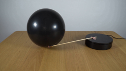
视觉工具实际返回图片 2
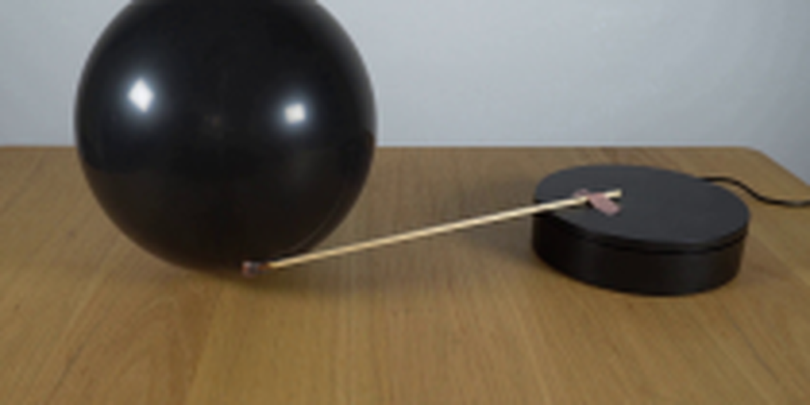
视觉工具实际返回图片 3
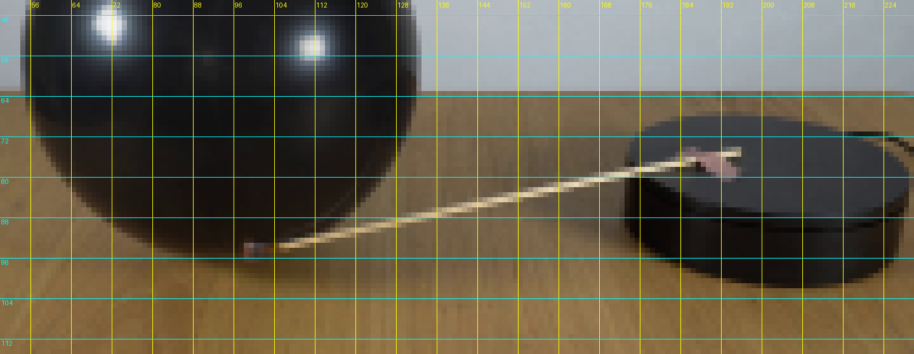
视觉工具实际返回图片 4

视觉工具实际返回图片 5
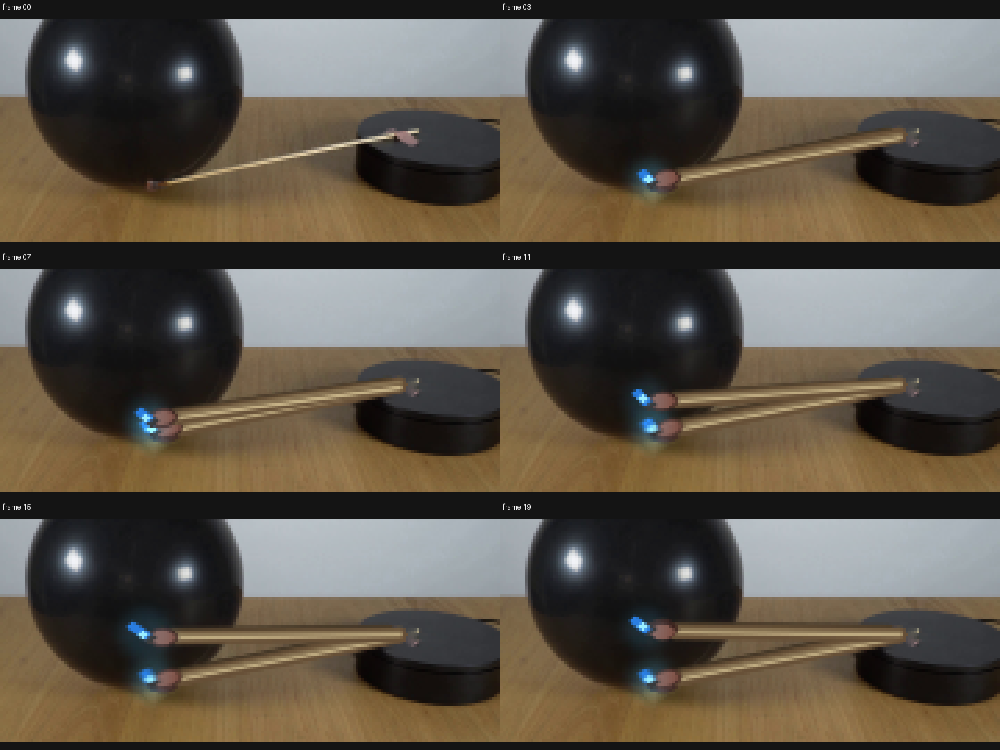
视觉工具实际返回图片 6
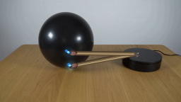
视觉工具实际返回图片 7
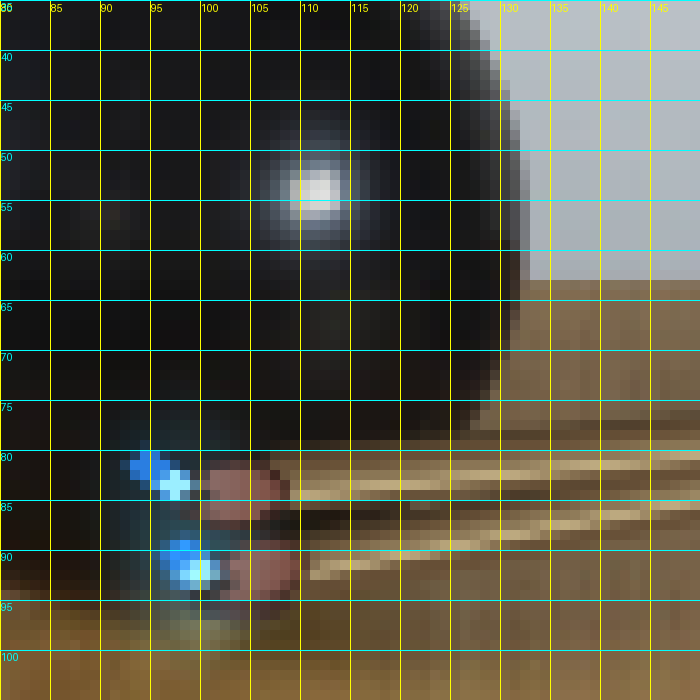
视觉工具实际返回图片 8
视觉工具实际返回图片 9
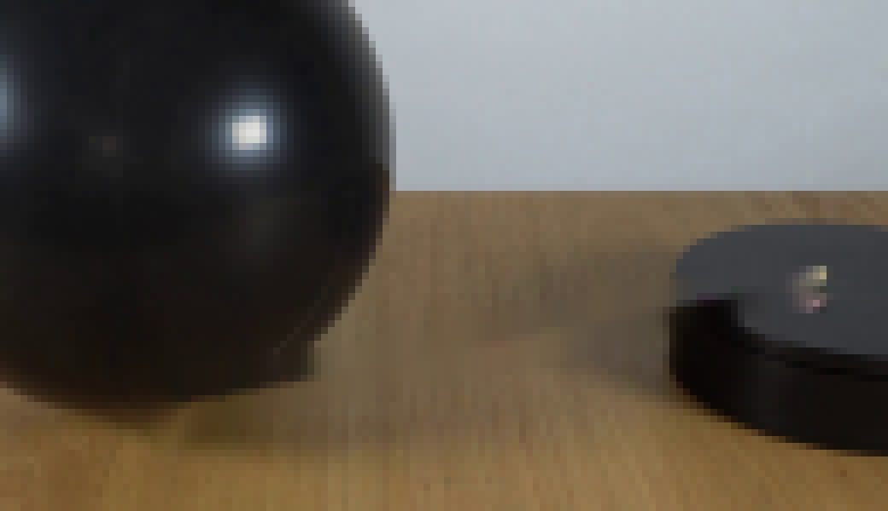
视觉工具实际返回图片 10
视觉工具实际返回图片 11
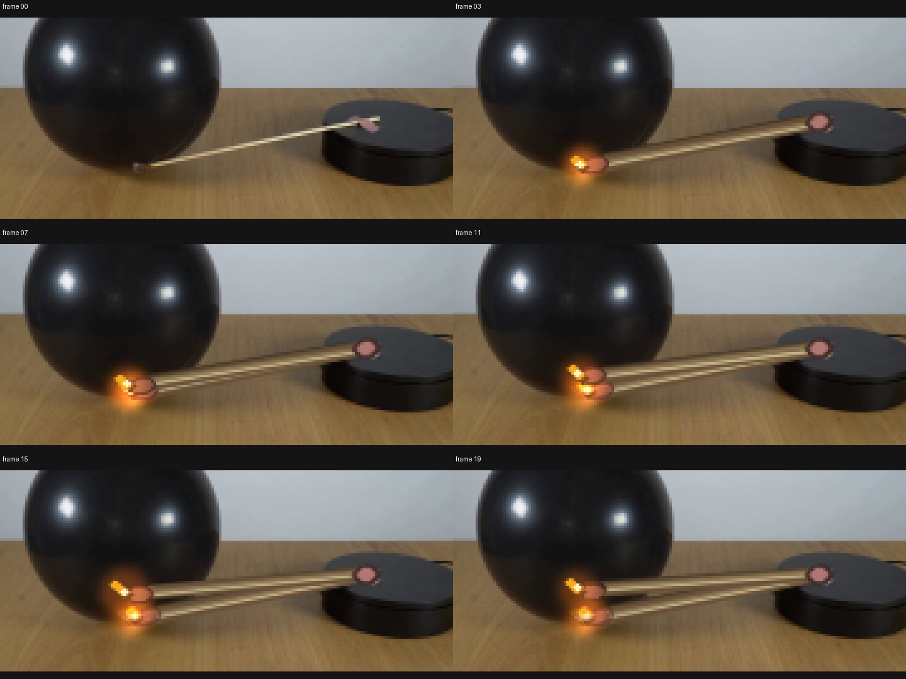
视觉工具实际返回图片 12
视觉工具实际返回图片 13
视觉工具实际返回图片 14
视觉工具实际返回图片 15
视觉工具实际返回图片 16
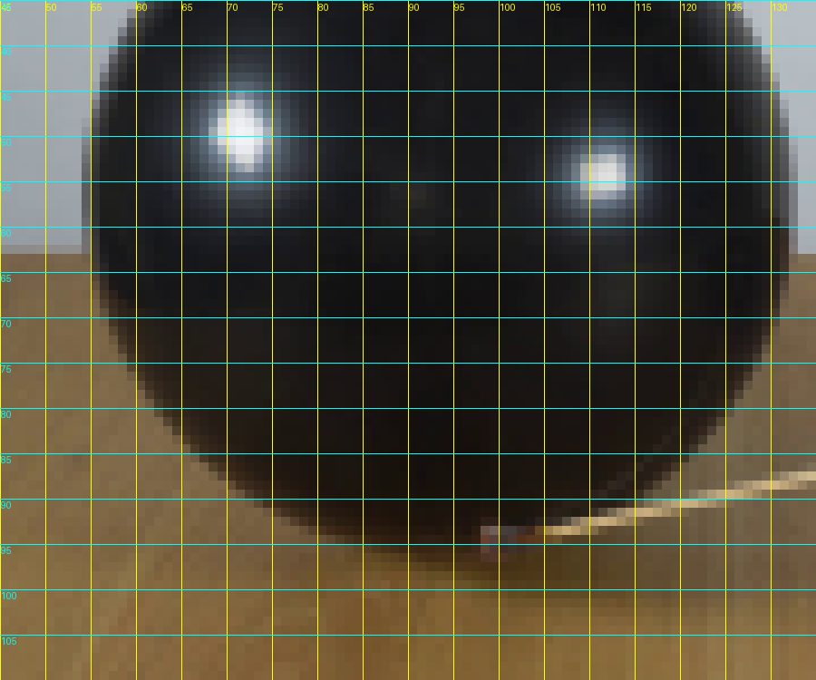
视觉工具实际返回图片 17
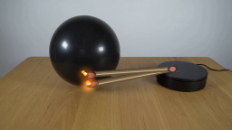
视觉工具实际返回图片 18
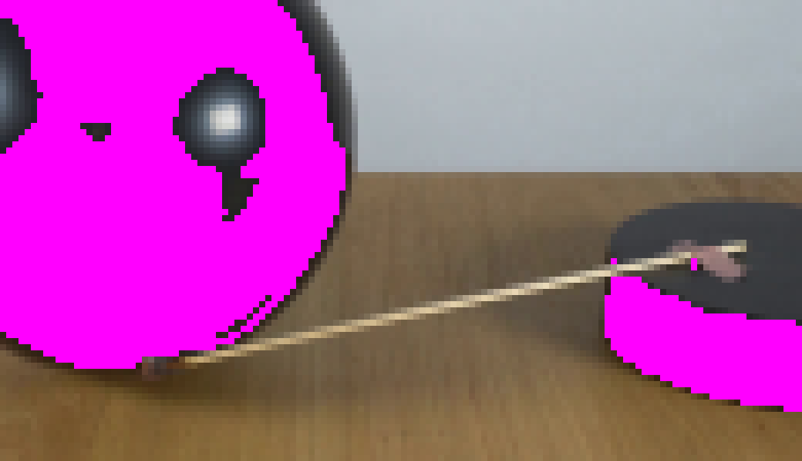
视觉工具实际返回图片 19
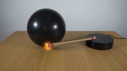
视觉工具实际返回图片 20
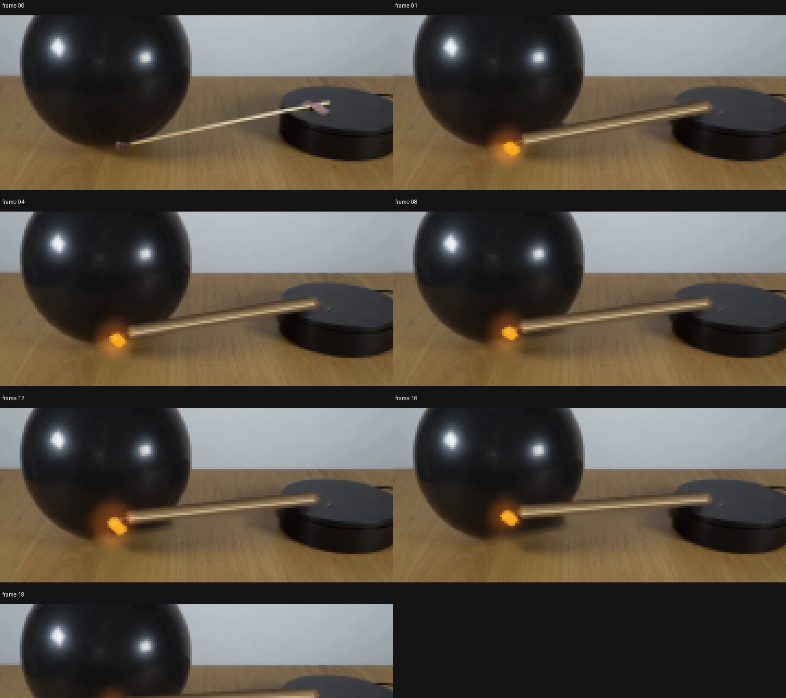
视觉工具实际返回图片 21
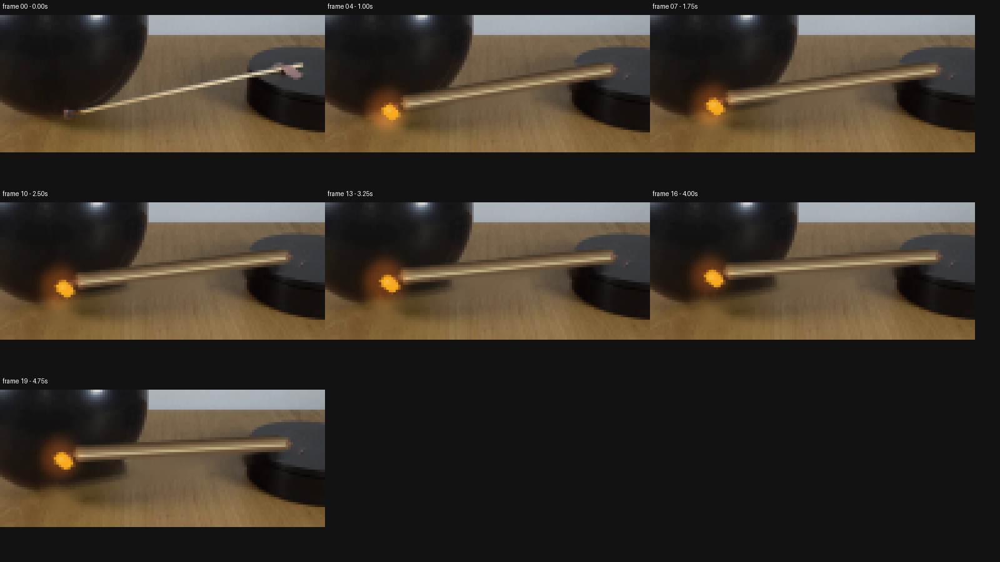
视觉工具实际返回图片 22
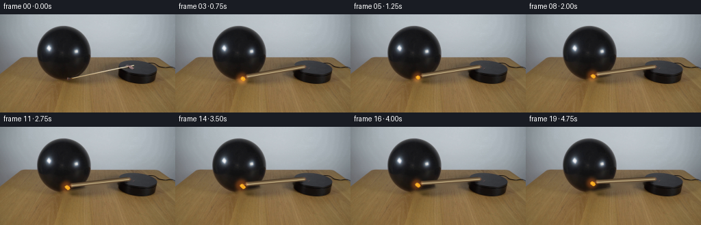
保存候选 8 份；完成命令 60 次；可验证图片返回 22 张。原始 API 响应与完整日志保留在本地。